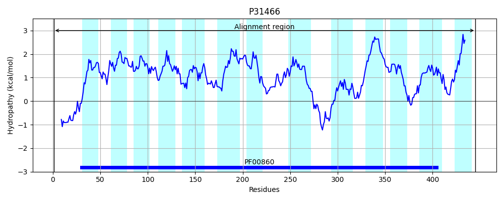

Hit Accession: P31466
Hit TCID: 2.A.40.7.6
Hit Description: gnl|BL_ORD_ID|9772 gnl|TC-DB|P31466|2.A.40.7.6 Probable adenine permease PurP OS=Escherichia coli (strain K12) GN=purP PE=1 SV=2
Mach Len: 445
e:0.000000
Query TMS Count : 13
Hit TMS Count: 13
TMS-Overlap Score: 13.650000
Predicted Substrates:CHEBI:2470;adenine
BLAST Alignment:
Score: 2099 , Bit scores: 813 bits, E-value: 0.0e+00, Alignment length: 445, Percentage identity: 94
Query: 1 MSQQQTSQSSGQGLLERVFKLREHGTTVRTEAIAGFTTFLTMVYIVFVNPQILGVAGMDTSAVFVTTCLIAAFGSILMGLFANLPVALAPAMGLNAFFAFVVVQAMGLPWQVGMGAIFWGAVGLLLLTIFRVRYWMIANIPVSLRVGITSGIGLFIGMMGLKNAGVIVANPETLVSIGHLTSHSVLLGILGFFIIAILASRNIHAAVLVSIVVTTLLGWMLGDVHYTGIVSAPPSVTSVIGHVDLAGSLNLGLAGVIFSFMLVNLFDSSGTLIGVTDKAGLADAQGKFPRMKQALFVDSVSSVAGSFIGTSSVTAYIESSSGVSVGGRTGLTAVVVGILFLLVIFLSPLAGMVPAYAAAGALIYVGVLMTSSLARVKWDDLTEAVPAFITAVMMPFSFSITEGIALGFISYCVMKIGTGRLRELSPCVIIVSLLFVLKIVFIDAH 445
MS Q T+Q+SGQG+LERVFKLREHGTT RTE IAGFTTFLTMVYIVFVNPQILGVAGMDTSAVFVTTCLIAAFGSI+MGLFANLPVALAPAMGLNAFFAFVVVQAMGLPWQVGMGAIFWGA+GLLLLTIFRVRYWMIANIPVSLRVGITSGIGLFIGMMGLKNAGVIVANPETLVSIG+LTSHSVLLGILGFFIIAILASRNIHAAVLVSIVVTTLLGWMLGDVHY GIVSAPPSV +V+GHVDLAGS NLGLAGVIFSFMLVNLFDSSGTLIGVTDKAGLAD +GKFPRMKQAL+VDS+SSV GSFIGTSSVTAYIESSSGVSVGGRTGLTAVVVG+LFLLVIFLSPLAGMVP YAAAGALIYVGVLMTSSLARV W DLTE+VPAFITAVMMPFSFSITEGIALGFISYCVMKIGTGRLR+LSPCVIIV+LLF+LKIVFIDAH
Sbjct: 1 MSHQHTTQTSGQGMLERVFKLREHGTTARTEVIAGFTTFLTMVYIVFVNPQILGVAGMDTSAVFVTTCLIAAFGSIMMGLFANLPVALAPAMGLNAFFAFVVVQAMGLPWQVGMGAIFWGAIGLLLLTIFRVRYWMIANIPVSLRVGITSGIGLFIGMMGLKNAGVIVANPETLVSIGNLTSHSVLLGILGFFIIAILASRNIHAAVLVSIVVTTLLGWMLGDVHYNGIVSAPPSVMTVVGHVDLAGSFNLGLAGVIFSFMLVNLFDSSGTLIGVTDKAGLADEKGKFPRMKQALYVDSISSVTGSFIGTSSVTAYIESSSGVSVGGRTGLTAVVVGLLFLLVIFLSPLAGMVPGYAAAGALIYVGVLMTSSLARVNWQDLTESVPAFITAVMMPFSFSITEGIALGFISYCVMKIGTGRLRDLSPCVIIVALLFILKIVFIDAH 445 | Protein Hydropathy Plots: |
|---|
 |  |
Pairwise Alignment-Hydropathy Plot:
|
|---|
 |